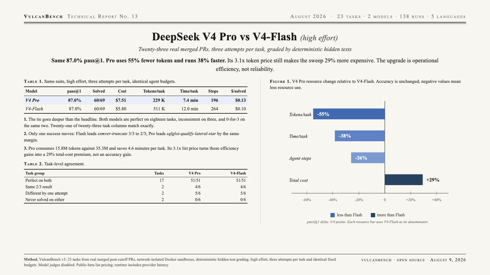

DeepSeek V4 Pro is an efficiency upgrade, not an accuracy upgrade: Pro and V4-Flash both score 87.0% pass@1. The tie holds beyond the aggregate: each goes 3-for-3 on eighteen tasks, 2-for-3 on three, and 0-for-3 on the same two. Pro reaches that result with 55% fewer tokens, 38% less wall-clock time, and 26% fewer agent steps. Its list price is 3.1 times higher per token, however, so the 69-run sweep still costs 29% more: $7.51 versus $5.80.

| Model | pass@1 | Solved | Failed | Cost | Tokens/task | Time/task | Steps/task | $/solved |
|---|---|---|---|---|---|---|---|---|
| DeepSeek V4 Pro | 87.0% | 60/69 | 9 | $7.51 | 229 K | 7.4 min | 196 | $0.13 |
| DeepSeek V4-Flash | 87.0% | 60/69 | 9 | $5.80 | 511 K | 12.0 min | 264 | $0.10 |
Both columns use the provider’s high reasoning setting, three attempts per task, network-isolated Docker sandboxes, and deterministic hidden-test grading. pass@1 is the mean per-task success rate. Cost uses public-beta list prices: V4 Pro at $0.435/$0.87 and V4-Flash at $0.14/$0.28 per million input/output tokens.
No measurable reliability gain. Both models solve 60 of 69 attempts for 87.0% pass@1 with the same ±6.2-point standard error. Each is perfect on eighteen tasks, inconsistent on three, and fails all three attempts on the same two: pennylane-trotter-fragmented and sqlglot-canonicalize-internal-names.
The tie is almost attempt-for-attempt. Twenty-one of twenty-three task columns are identical. Pro loses one success on semver-truncate and gains one on sqlglot-qualify-lateral-star. The aggregate tie is not hiding a broad capability reshuffle.
Pro is dramatically leaner. It consumes 15.8 million tokens against Flash’s 35.3 million, averages 196 agent steps instead of 264, and finishes a task in 7.4 minutes instead of 12.0. That is 55% fewer tokens, 26% fewer steps, and 38% less time.
Token efficiency nearly offsets a 3.1× unit-price premium. Pro costs $7.51 for the sweep versus $5.80 for Flash. The net premium is 29%, not 210%, because Pro uses less than half the tokens. Buyers are paying roughly three cents more per successful attempt to save 4.6 minutes of wall time.
The choice is operational. Choose Flash when API spend dominates; choose Pro when latency and token volume matter more. On this suite, there is no accuracy case for paying the premium.
| Task group | Tasks | V4 Pro | V4-Flash |
|---|---|---|---|
| Perfect on both | 17 | 51/51 | 51/51 |
| networkx-leiden-communities | 1 | 2/3 | 2/3 |
| sqlglot-iso8601-nanos | 1 | 2/3 | 2/3 |
| semver-truncate | 1 | 2/3 | 3/3 |
| sqlglot-qualify-lateral-star | 1 | 3/3 | 2/3 |
| Never solved on either | 2 | 0/6 | 0/6 |
The never-solved pair is pennylane-trotter-fragmented and sqlglot-canonicalize-internal-names. Cells are successful attempts over total attempts. Partial hidden-test scores remain failures for pass@1.
VulcanBench v3 contains 23 tasks from real merged post-cutoff PRs (Python 9, TypeScript 4, Rust 4, Go 3, JavaScript 3). Both models ran through the same agent harness in network-isolated Docker sandboxes with deterministic hidden-test grading, high reasoning effort, three attempts per task, and the suite’s fixed step, time, and cost budgets. Model judges were disabled. Caveats: this is one suite, one effort setting, and one harness; equal pass@1 does not establish equal capability in every coding domain. Runtime includes provider latency and can vary with service load. The ±6.2-point uncertainty bars overlap completely, so the result supports a tie, not a hidden ranking.
{kind=link}